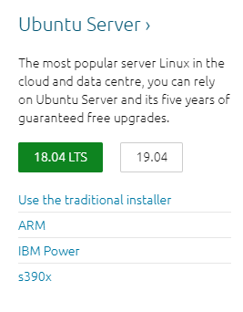

將youtube影片放入倉儲 << Previous Next >> VPN
將youtube影片放入倉儲 << Previous Next >> VPN
Virtual Box
1.創一個Virtual Box 按照以下圖片去依序設定


2.先按圖進行網路設定後開啟虛擬主機


3.Download Ubuntu
Enter this website


Download this one

4.開啟虛擬主機後按照下圖選檔案設定

5.完成一連串的設定 因無法螢幕截圖所以以文字敘述
(1)至詢問網路前一直按enter即可
(2)輸入現在練線網路 格式為 http://網路IP
(3)到第7個之前只需按enter 第6個按continue
(4)第7個輸入帳密
(5)按space打叉之後按doney再按done
(6)Reboot按下後會重新啟動 即可完成
6.開機完成後需要登入 登入完成後畫面須為 "帳號名$" 才可輸入指令
ifconfig : 查看現在網路連線
sudo apt install nginx : 安裝 nginx WWW 伺服器
7.Download FileZilla


完成後開啟檔案

8.完成設定

主機部分為ifconfig所得出的結果 設定完按連線

成功畫面

輸入 http://ifconfig的答案 須出現此畫面

將youtube影片放入倉儲 << Previous Next >> VPN